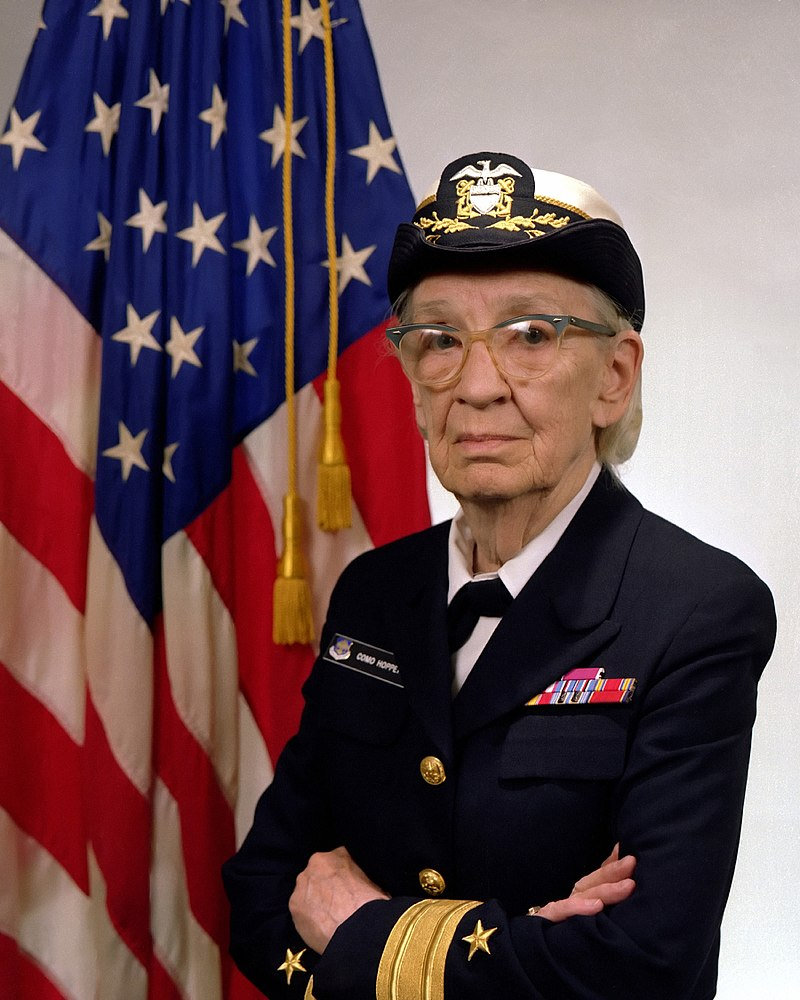
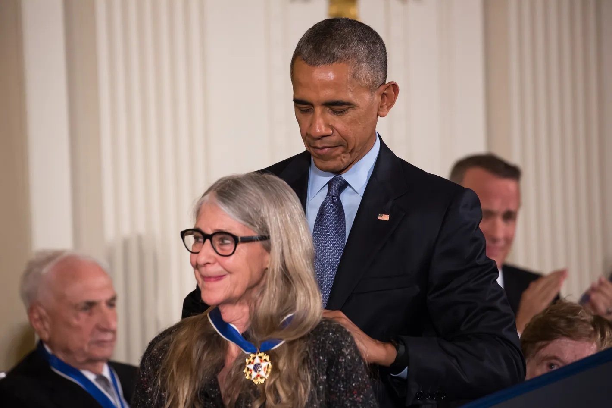

- Biographie
-
Grace Brewster Murray est née le 9 décembre 1906 à New York. Elle étudie les mathématiques, la physique et l'économie au Vassar College, et en sort diplômée en 1928. En 1934, elle obtient un doctorat en mathématiques de l'université Yale1,2.
La jeune femme enseigne les mathématiques au Vassar College entre 1931 et 1944. Elle épouse en 1930 Vincent Hopper, un professeur de littérature. Le couple, qui n'a pas d'enfants, divorce en 1945.
- En 1943, Grace Hopper s'engage dans la marine américaine. Elle travaille dans l'équipe de Howard Aiken sur l'ordinateur Harvard Mark I.
- À la fin de la Seconde Guerre mondiale, elle quitte le service actif de la marine, mais continue à travailler au développement des ordinateurs Harvard Mark II puis Harvard Mark III.
- En 1949, Grace Hopper est employée par Eckert-Mauchly Computer Corporation et rejoint l'équipe développant UNIVAC I. En 1955, elle invente le langage FLOW-MATIC pour l'UNIVAC I. À partir de 1957, elle travaille pour IBM, où elle défend l'idée qu'un programme devrait pouvoir être écrit dans un langage proche de l'anglais plutôt que d'être calqué sur le langage machine.
- Au cours des années 1970, elle mène les travaux d'établissement de normes pour les ordinateurs, en particulier les premiers langages de programmation évolués : Fortran et Cobol.
- Grace Hopper reste dans la Marine jusqu'en 1986, date à laquelle elle prend sa retraite avec le grade de Rear admiral (lower half).
- Accomplissements
- Conceptrice du premier compilateur en 1951.
- En 1955, invente le langage FLOW-MATIC.
- Crée le language Cobol en 1959.
- Atteint le grade de Rear admiral (lower half).
- Devient l'officer le plus âgé de la marine américaine.
- Reçoit la National Medal of Technology pour « ses contributions novatrices dans le développement de langages de programmation ».
- Reçoit la médaille présidentielle de la Liberté de la part de Barack Obama.


- Hommages
- En 1973, Grace Hopper est nommée « membre émérite » (distinguished fellow) de la British Computer Society.
- En 1997, un destroyer de la classe Arleigh Burke, est baptisé USS Hopper.
- En France, le Laboratoire d'informatique de l'École polytechnique a baptisé une de ses salles en son hommage.
- La promotion 2018-2021 de la MIAGE de Sophia-Antipolis est nommée en son honneur.
- Aux États-Unis, l'académie navale a baptisé son centre de cyberdéfense en son hommage.
- En France, la place Grace-Murray-Hopper (13e arrondissement de Paris), lui rend hommage.
- Une conférence technique internationale, organisée depuis 1994 par l'Institut Anita-Borg, est baptisée Grace Hopper Celebration of Women in Computing.